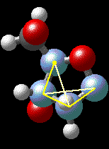

DNA Structure Activity
Problem 5: Is the deoxyribose ring flat or puckered?
Do all the atoms of the sugar ring lie in the same plane? (Note: You can measure this directly by clicking on 4 consecutive ring atoms with the dihedral angle tool at the far right of the tool bar. If the ring is planar, the measured angle will be close to either 0 or 180 degrees).
Tutorial
|  |
Only 4 of the 5 atoms of the deoxyribose sugar ring are close to being in the same plane. If we measure the angle between carbon atoms 1-2 and carbon atoms 3-4 with the dihedral angle tool as shown in the illustration, the angle of pucker in the ring is measured to be -25.97 degrees for the example chosen.
To measure the dihedral angle as shown:
|


University of Arizona
Modified: May 27, 1997
Contact the Development Team
http://www.biology.arizona.edu
All contents copyright © 1997. All rights reserved.